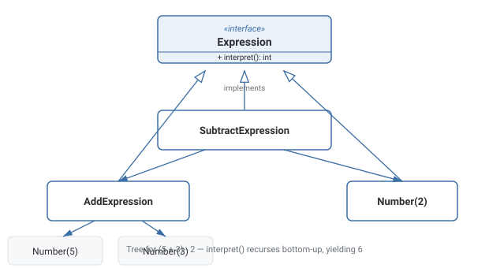

Interpreter Pattern
Represents each rule of a simple grammar as its own class, so evaluating an expression means building a tree of these objects and recursively calling interpret() on it.
Theory
The problem, in plain terms
You want your application to evaluate simple arithmetic expressions supplied as data, like "5 + 3 - 2", without hard-coding every possible expression as a method in your language. Writing a single big function that parses and evaluates the whole string works for very simple grammars, but as the grammar grows — parentheses, more operators, variables — that one function turns into a tangle of string-parsing logic that's hard to extend or reason about.
Interpreter represents each grammar rule as its own class implementing a common Expression interface with an interpret() method. A NumberExpression just returns its literal value. An AddExpression holds references to two other expressions and returns the sum of interpreting each of them. Because expressions can hold other expressions, you build up a tree — the same idea as an abstract syntax tree in a real compiler — and evaluating the whole expression just means calling interpret() on the root, which recursively calls interpret() down through the tree.
How it's built
An Expression interface declares interpret(). TerminalExpression classes (like NumberExpression) represent the grammar's basic building blocks and directly return a value. NonterminalExpression classes (like AddExpression, SubtractExpression) represent composite rules, holding references to child expressions and combining their interpreted results according to the rule. A separate parsing step turns raw input into this tree of Expression objects, which is then interpreted by calling interpret() on the root node.
Reach for Interpreter only for genuinely small, stable grammars — it's a good fit for a tiny expression or rule language, not a general-purpose one.
Reaching for a full class-per-grammar-rule Interpreter implementation for a grammar that's actually large or growing — a parser generator scales far better.
Where it bites you
Interpreter works cleanly for genuinely small, simple grammars, but scales poorly — each grammar rule needs its own class, so a grammar with dozens of rules means dozens of classes, and the resulting tree-walking interpretation is typically much slower than a proper parser generator or hand-written recursive-descent parser producing optimized code. For anything beyond a toy expression language, most real systems reach for a parser generator (ANTLR, yacc) or a hand-rolled parser rather than a literal class-per-grammar-rule Interpreter implementation.
Diagram

When to Use
- You have a genuinely small, simple grammar to evaluate repeatedly.
- Representing the grammar as a tree of objects, each interpretable on its own, is a natural fit.
- The grammar is stable and unlikely to grow into something much larger.
- The grammar is large or likely to grow substantially — a parser generator scales far better.
- Performance matters and the tree will be evaluated extremely frequently — tree-walking interpretation is typically slow.
What interviewers are actually listening for: recognizing that Interpreter is essentially "build a tiny AST and evaluate it recursively," and being honest about its scaling limits — most production-grade language/expression parsing uses dedicated parser generators rather than a literal Interpreter-pattern implementation once the grammar grows beyond something small.
Real-World Examples
- Simple calculator/expression evaluators — parsing and evaluating arithmetic expressions as a tree of Expression objects.
- Business rule engines — simple conditional rules represented as a tree of evaluable rule expressions.
- Regular expression engines (conceptually) — a regex pattern compiled into a tree/state machine of matching expressions.
- SQL-like query filters embedded in applications — a simplified filter language parsed into a tree of filter expressions.
- Spreadsheet formula evaluation — a cell formula parsed into a tree of operations and evaluated recursively.
Interview Questions
Click a question to reveal the answer.
What are terminal and nonterminal expressions in Interpreter?
A terminal expression represents a basic, indivisible element of the grammar and directly returns a value when interpreted. A nonterminal expression represents a composite grammar rule that holds references to child expressions and combines their interpreted results according to that rule — building up a tree structure.
How does evaluating the whole expression tree actually work?
You call interpret() on the root node of the tree. Each nonterminal expression's interpret() recursively calls interpret() on its child expressions and combines their results, while each terminal expression's interpret() simply returns its own literal value — the recursion naturally evaluates the entire tree bottom-up.
Why doesn't Interpreter scale well to large grammars?
Because each distinct grammar rule needs its own class — a grammar with dozens of rules requires dozens of classes, which becomes unwieldy to maintain. Tree-walking interpretation is also typically much slower than a properly compiled or bytecode-based evaluator.
What do real-world systems use instead of hand-rolled Interpreter classes for larger grammars?
Parser generator tools (ANTLR, yacc, PEG-based generators) or hand-written recursive-descent parsers that typically compile the grammar into a more efficient representation rather than representing every single grammar rule as its own hand-written class.
Code & Output
Same pattern, four languages. Every output shown here was captured from a real run — note two differently-shaped trees both evaluate correctly through the same recursive interpret() call.